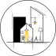
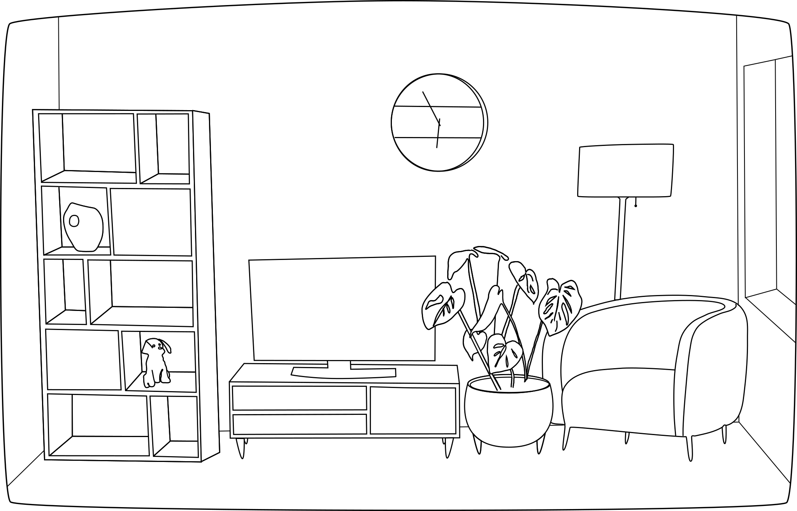

After scrolling through google images for inspiration, I decided to create my own logo for an architecture and interior design company. I think this logo does a good job of showing that this hypothetical company does both, having the house with furniture inside shows the interior design portion and the three buildings all together shows architecture. In this image, I used the rectangle shape tool to create that black silhouette of a building on the left side, and I used the circle tool to create the circular frame for the logo. For the chimney on the house, I drew a pentagon and then used the "difference" path tool to cut out an unneccesary corner of the chimney where it overlaps with the house.

I decided to snap a picture of the living room in my apartment and use that as a reacing/photo reference to make a sketch-like drawing. I used the circle shape tool for the clock, and the rectangle shape tool for the TV. Everything else was mostly created with the bezier curve/straight line tool, but the plant was hand-drawn and modified. Lastly, the exclusion tool was used on the feet of the plant pot, to exclude unnecessary parts.